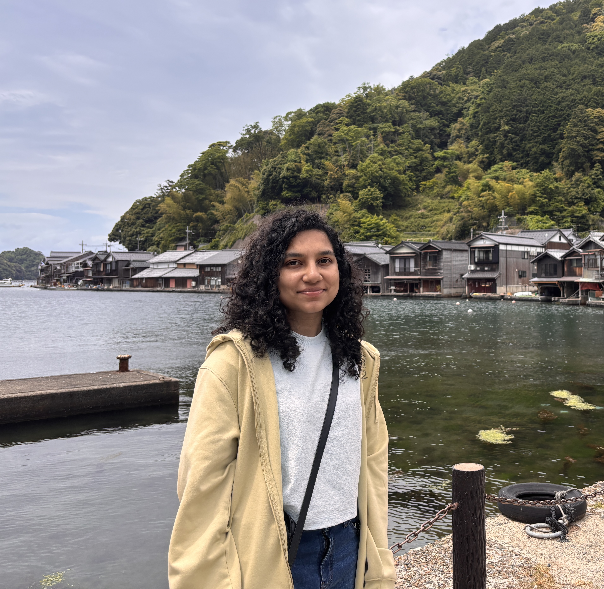

2023–2025, NAIST
SinhalaMMLU
The first benchmark for testing LLMs in Sinhala: 7,000+ exam questions across 30 subjects, used to evaluate 26 LLMs.

APPhD student, Nara Institute of Science and Technology (NAIST), Japan
I am a PhD student in the Natural Language Processing Laboratory at the Nara Institute of Science and Technology (NAIST), Japan, supervised by Prof. Taro Watanabe, and supported by the MEXT Scholarship. My research focuses on evaluating large language models in low-resource and multilingual settings. Currently, I am interested in the social biases that language models have: how to measure them and understand where they come from.
During my undergraduate studies at the University of Colombo School of Computing (UCSC), Sri Lanka, I focused on neural machine translation for low-resource languages, especially the Tamil–Sinhala language pair. I later worked there as a research assistant and assistant lecturer.
ACM TALLIP, 2026 Under review
EMNLP 2025
Paper DatasetACL 2025 Student Research Workshop
PaperNAACL 2025
PaperICTer Journal, 2024
PaperRANLP 2023 Student Research Workshop
PaperICTer 2020 (IEEE)
PaperThe first benchmark for testing LLMs in Sinhala: 7,000+ exam questions across 30 subjects, used to evaluate 26 LLMs.

Studying how movie titles, genres, summaries and earlier dialogue help LLMs translate subtitles into German, Spanish, French and Finnish.
A neural translation system trained on 165k sentence pairs (20.44 BLEU), deployed as a public web app. Bronze award at NBQSA 2022.

A RASA-based conversational AI for a local bank, handling 3,000+ daily questions across 5+ products. Merit award at NBQSA 2023.

FastText embeddings trained on a 10M-word Sinhala corpus, capturing word meaning better than the existing pre-trained model.

Summer school project on measuring text fluency, commended as the best project at IASNLP 2022.